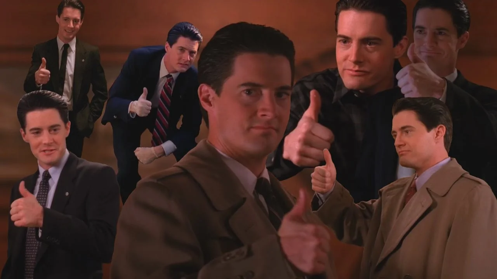

Mensaje enviado
Gracias por enviar tu mensaje. Lo recibimos correctamente y pronto nos pondremos en contacto.
Mientras tanto, podés volver al inicio y seguir recorriendo los secretos, personajes y misterios que esconde el pueblo de Twin Peaks.

Gracias por enviar tu mensaje. Lo recibimos correctamente y pronto nos pondremos en contacto.
Mientras tanto, podés volver al inicio y seguir recorriendo los secretos, personajes y misterios que esconde el pueblo de Twin Peaks.